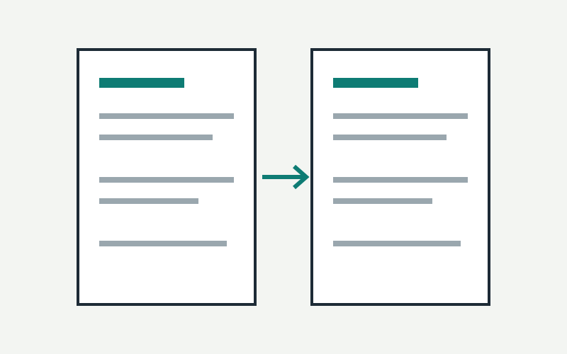

作品概要
你現在看到的這個網站。生成式 AI 課程的作業要求建立一份 CLAUDE.md，讓 AI 讀完就知道這個專案要怎麼繼續做下去。我把作品集做成一個小型的 LLM Wiki：原始程式碼放在 sources/，AI 照規則讀完後整理成作品頁。
來源：CLAUDE.md
我負責的部分
個人作品。我決定網站要呈現什麼、每件作品要放哪些原始資料，並和 Claude 一起把規則寫成文件、做出網站。
技術與工具
- 純 HTML / CSS / JavaScript：沒有建置步驟，GitHub Pages 直接部署，雙擊
index.html也能看。 - sources/：每件作品的原始資料快照，附一份
SOURCE.md，寫明來源和排除了哪些機密。 - data/works.js：所有作品的索引放在同一個檔案，首頁目錄、篩選、作品頁資訊欄都從這裡產生。
- scripts/check.py：檢查檔名、六個區塊、來源連結、類型清單，也會掃描
sources/有沒有留下 API key。 - Claude：依
CLAUDE.md讀原始資料、產生與修改頁面。
製作過程
- 先定格式把每件作品固定成六個區塊：概要、我負責的部分、技術、過程、成果、反思。
- 第一版的問題第一版作品頁是 AI 依對話印象寫的，有幾句心得和描述是 AI 自己推測的。
- 改成資料先行把四個專案的程式碼放進
sources/，規定每段內容都要附來源連結，查不到的就標「待補」。 - 把機密擋在門外匯入時發現有一份企劃書匯出檔留著真實的 API key，所以在規則和
check.py裡加上機密掃描。
目前成果
目前有五件作品，都是照同一份模板和規則產生的。匯入新作品的步驟寫在 CLAUDE.md 第 10 節，最後一步是跑 check.py，全部通過才算完成。
來源：CLAUDE.md
反思與下一步
待補：我自己的心得與下一步。